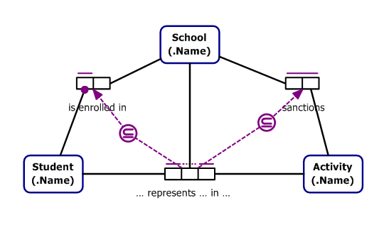
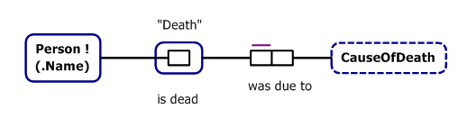
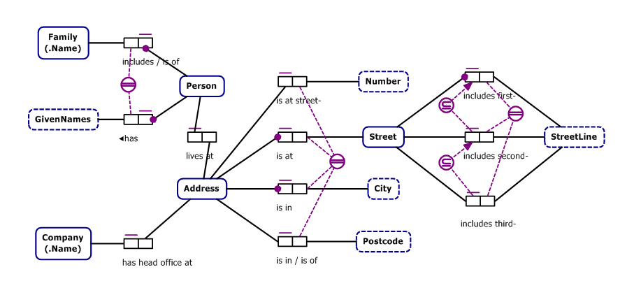
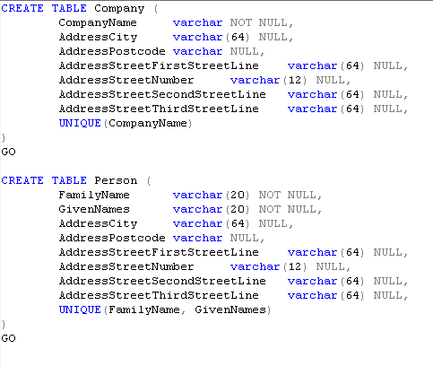
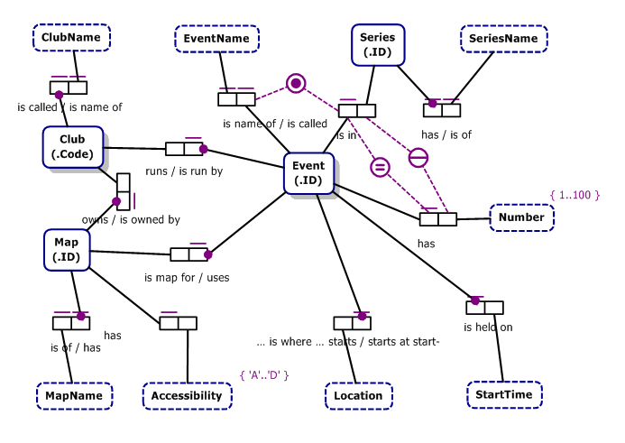
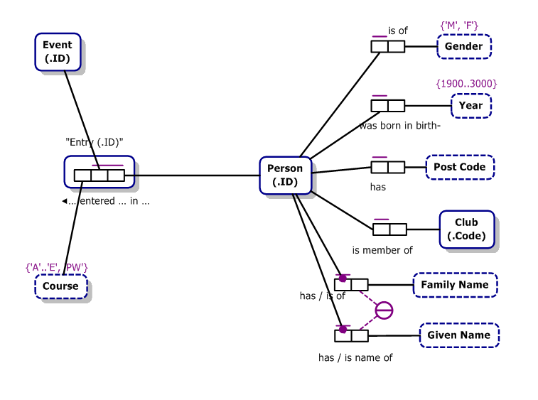

Introduction to Object Role Modeling
Copyright (c) 2007 Clifford Heath.
Congratulations, you're just a few minutes away from knowing a more agile way to design good database schemas. These models were created in ORM2 using NORMA. ORM2 terminology is emphasised on first use. Although the CQL here was generated from the ORM2, you can produce the same effect by writing it yourself.
CompanyDirectorEmployee
This model shows the some of the relationships of a person to a company of which they are a director or employee.
| View the generated: | CQL | Ruby | SQL |
This model includes examples of the features of ORM2 you'll be seeing most often.
- Entity Types (Person, Company) and Value Types (Name, Date). Collectively, ActiveFacts calls them Concepts. Value types have a dashed outline.
- Entity Identification schemes: Person is identified by the pair of values (given-Name, family-Name), as indicated by the circle with two lines across it. Company is identified by a single CompanyName, but since this is a common pattern, it's included within the Company shape, which is called a reference mode. Every Entity Type must have some identification scheme or preferred identifier, which enables us to tell the instances apart.
- Subtype: Employee and Manager are subtypes. Employee has a dashed arrow, because it has its own identification scheme, it doesn't use Persons's scheme. An EntityType may have multiple supertypes, and an instance may play any role of its supertypes (so we can record the Birth-Date of an Employee, for example).
- Fact Types define relationships between concepts. They're displayed as a series of one or more Role boxes. For example, the fact type "Person has given-Name" has two roles, played by Person and Name. The unary fact type Meeting is board meeting indicates a true/false condition with respect to a meeting.
- Objectified Fact Type: Directorship and Meeting are fact types that are also entities, and thus can play other roles, such as the role of Directorship in "Directorship began on appointment-Date".
- Fact Readings are displayed as text under each fact type. A fact type may have many readings, though only the preferred one is shown on the diagram. Binary fact types may display a reading for each direction. An arrow is displayed if a single reading is to be read in the opposite order from the obvious one.
- Uniqueness constraints: The horizontal lines above the fact types are uniqueness constraints (UC). A UC covering a single role allows that role's player to occur only once all the instances of that fact type (what we call the population of that fact type). A UC that covers two or more roles allows any combination of those players, but only once for each combination. An external UC may connect to roles in more than one fact type, and is shown as a circle with a line across it. If any of the UC lines is doubles, that UC acts as a preferred identifier for the indicated entity type.
- Mandatory constraint: The heavy dot on some role connectors (like the one on the Company role box of Director) is a mandatory constraint that requires every company to have at least one director. A mandatory constraint may also be shown as a hollow dot, which says should, rather than must.
- External Mandatory constraint: The circle containing a crossed dot which is joined to "is ceo" and "Employee is supervised by Manager" is a mandatory exclusion constraint. The cross (X) indicates exclusion (only one) and the dot indicates mandatory (at least one). Both types may also occur separately.
- Ring constraint: A Ring constraint is attached to the "Employee is supervised by Manager". This one is acyclic, indicating that an Employee may not supervise themselves, or anyone who supervises them, and so on. There are a number of other types of ring constraints.
- Role Value Restriction: The Date value recorded for a person's birth date may not be before the year 1900. Other Date values don't have this same restriction.
SchoolActivities
This model represents students representing their school in school-sanctioned activities.

The model has three interesting constraints:
- Uniqueness over Student represents School in Activity:
- Allows a given Student may only participate in a given Activity for a single School
- Subset from Participation to Enrollment
- Only for the School in which they're enrolled
- Subset from Participation to Sanctions
- Only if the School sanctions that activity.
The rules of elementarity require that every fact type having N roles has a uniqueness constraint over either N or N-1 roles, and never over fewer roles. This is satisfied here by the StudentParticipation having a uniqueness constraint over two of its three roles.
The subset constraints work like this. The student is enrolled in exactly one school, and the set of (School, Student) pairs is a superset of the (School, Student) pair inside the StudentParticipation ternary. In simple terms, this requires that each student who participates in some activity may only do so as a representative of the school in which they're enrolled, and not for any other school. The other subset constraint requires that such participation may only occur for an activity that is sanctioned by that school. The direction of the subset arrow is consistent with the arrows used in sub-typing, as shown in the next case.
Death
 This example is more a curiosity than anything else, serving to illustrate a case that you might not otherwise think was possible. Person may play a unary role in the fact type "is dead". If they are in fact dead, we might wish to record some facts about the event of their death, so we nest (objectify) the "is dead" fact type as a new entity, Death. This allows us to associate their death with a value indicating the cause of death. The uniqueness constraint requires that we record only one cause of death.Address
The Address model shows how a mass of fine semantic detail can be turned into an efficient relational database structure, through the miracle of absorption.
| View the generated: | CQL | Ruby | SQL |

Note that the preferred identifier for Street covers all its functional roles. Essentially that means that whereever we have a Street, all the attributes of that street must be provided; so we can include them in more than one table without breaking the relational Third Normal Form, which would introduce unsafe duplication.
The same thing pertains for Address, so we can have an Address in both the Company and Person tables without breaking normalisation. Here's the generated SQL created by afgen:

Note also that the SQL doesn't enforce the uniqueness constraint requiring that each Address occurs once only. There's no need to. Each Address is identified by its roles, but more than one person may live at the same address, and a company might have its HQ there too. If you want all the distinct addresses, you can write an SQL UNION query for that.
If you want an Address table anyhow, you can mark it as independent, which is an instruction to the absorption process that an instance of this entity type might exist apart from any other roles it might play. Independent entity types are shown in ORM2 as having an exclamation point ! after their name. In order to represent an independent entity type in SQL, a separate table is always needed.
If you were to add a functional role to Address that's not part of its identifier, the rules of normalisation gazump absorption and Address will become an independent table. In that case, Company and Person would have each a large multi-part foreign key into the new Address table, so it might be preferable to introduce a surrogate key in the form of a database-allocated unique integer into the address entity, and mark that key as the preferred identifier instead. This can be done with minimal change to the semantic model, so any queries you have will probably still just work - this is a key advantage of the semantic approach.
Note that the absorption process must know all the entity types, fact types, and constraints for the model. If you add a single fact type or change a constraint, that might require that some concepts are represented in new tables, or different ones, and these changes can cascade, so that a small change in the conceptual model requires a large database migration. If you've written your program using the Constellation API, you'll have minimal rework.
Orienteering
Here's a three-part model of a system for the sport of Orienteering. The three parts cover administration, registration and scoring respectively, which also happens to map areas of interest to folk in different roles. Any feature may show on more than one diagram, and the ORM2 rules don't indicate that such an element has a special affinity with any diagram on which it appears. Concepts that appear in more than one place are shown with a drop-shadow. The diagrams are presented without much comment, and after that, the absorbed (compound) form is shown as an entity-relationship diagram.
Administration

A couple of new features are shown here. Number has a Value restriction, which is similar to the role value restrictions we saw before, except it applies to all Numbers.
Also here you'll see an external mandatory constraint without an exclusive cross. This one requires that an event is either part of a series, or has a name, or both. If and only if the event is part of a series, it must also have a number in that series - this is shown by the equality constraint, a circle with an = sign in it.
Registration

Scoring

| View the generated: | CQL | Ruby | SQL |
This model also shows the resultant score for a given Entrant's
Entry to a given Event. This value will be computed from the times
of their visits to punches during the event, according to a scoring
method as advised. The asterisks indicate that the role value is
derived from other values in the model, or that some values may
be derived and others now.